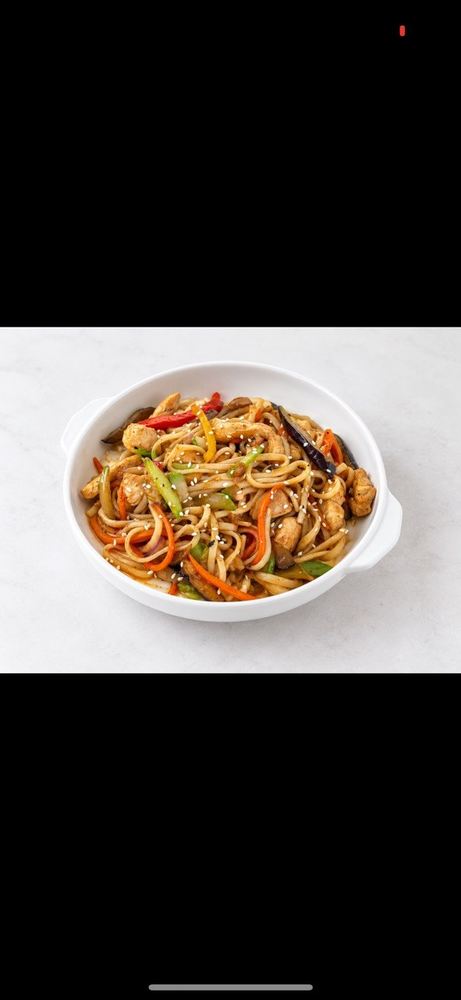

Удон с курицей / креветкой
Ароматная лапша-удон с сочной курицей/креветками и свежими овощами, в насыщенном соусе якитори.
450 / 500 ₽
С курицей / С креветками
КБЖУ
С курицей:
- Калории
- ~865–910 ккал
- Белки
- ~36 г
- Жиры
- ~16–21 г
- Углеводы
- ~130 г
С креветками:
- Калории
- ~775–820 ккал
- Белки
- ~31 г
- Жиры
- ~13–18 г
- Углеводы
- ~130 г